I still remember Shirley and me getting an email from Alberto Cairo while I was on vacation in Myanmar last October. If we'd be interested in doing a data sketches style project for Google News Lab. Of course! I was thinking of going freelance anyway in the new year, so this would be a super project to start off with :)
We were completely free to supply our own ideas for topics, as long as it revolved around Google data. So Shirley and me made a list with about 4 topics, within which each of us would have our own spin on the topic as usual. Simon Rogers, our main point of contact at Google, picked the topic of Culture, something a bit light and fun after all those months of politics in late 2016.
My angle for culture came from something I experience with Google quite often. Being a Dutch native speaker dealing in English about 95% of my working day, I sometimes need to find the translation of a word into English. I either type "Dutch word in het Engels" into Google itself or go to Google Translate. And I was really interested to know what different languages want to have translated into English, especially if it's just one word. Do German speakers search for the same kinds of words as the Spanish? Would it reveal something about their cultures?
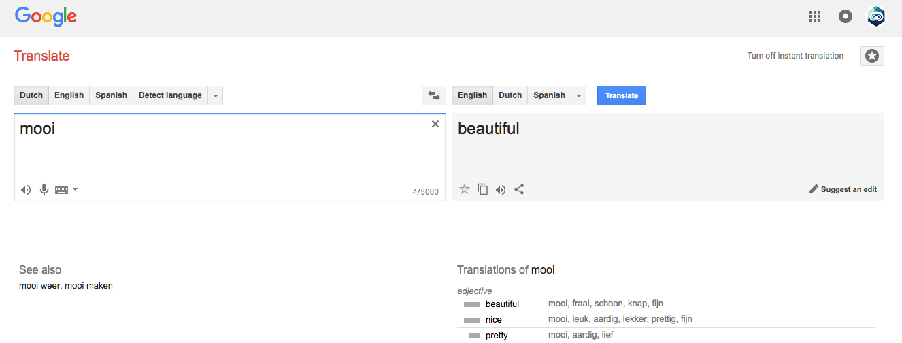I worked with Jennifer Lee from Google to get the translation data. At first we wanted to look for actual Google searches; people searching for "native word into English" (where "into English" would be in their native language as well). But getting the corresponding translation of that native word proved a bit difficult. Therefore, we turned to the Google Translation team. An expert of theirs warned us that the results would probably be quite mundane, but both me and Simon (thankfully) were quite intrigued by that idea.
Rick Genter, from the Google Translate team, wrote a query to get all the single word translations that happened on Google Translate between August 2016 and December 2016 for 10 chosen popular languages. That was about as far back as the translation queries are saved. Also, doing the query once took hours and extra resources, so we couldn't get multiple subsets (e.g. one a month). Nevertheless, I was super excited about this one dataset anyway, even if no time comparison was possible.
Already before getting the actual data I had decided to only look at nouns (e.g. dog, chair). I knew that probably Hello or I or Thank you would be the most often translated words, and I was interested in the more subtle differences. So, after having received the data, I wrote a script in R that could help with picking out the nouns by tagging each English translation (and if available, tagging the original word as well) with its grammatical form with the NLP & OpenNLP packages.
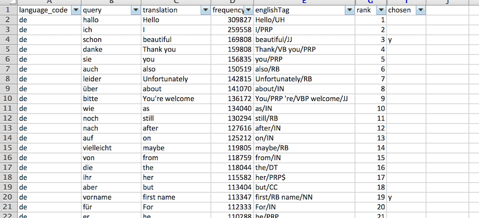Browsing through the results I saw three things. First, the adjectives, typically placed before a noun, such as young and intelligent, also held interesting results. Therefore, I decided to keep both the nouns and adjectives. Second, I saw that some languages use male and female words for the same English translation, such as hermosa and hermoso meaning beautiful in Spanish. Or synonyms for the same word, such as bonito again meaning beautiful in Spanish. Dutch however only has the word mooi that translates to beautiful. To get a fair comparison between rankings within languages I therefore combined the search frequencies for all terms that translated to the same English word (per language).
And third, as I'd expected, the automatically generated tagging results by R weren't perfect. For example, an English word can be both a verb or a noun, depending on the context. So to get a top 10 per language, I actually ended up looking up each original word that I wasn't sure about on Wiktionary to see what the most probable translation / grammatical form was. And that took a looooong time. But eventually I had a top 10 for each of the 10 languages that I was happy with.
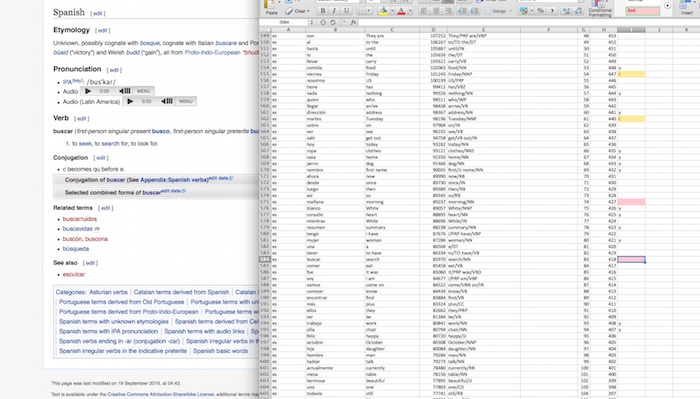For the overall language top 10 I looked at the rankings per language, not the sum of search queries, to compare relative popularity. I used a point based system where the number 1 word in a language would get the most points, the number 2 would get 1 point less, etc. The overall top 1 would then be the English translation that had the most points from all languages combined, and so on.
The sketching part this month actually happened before the data section, because Simon and Alberto wanted to see possible designs of visualizations and the overall page beforehand. Since I was dealing with words and languages I was inspired by the idea of using word strings as much as possible. Initially I wanted each line in my final visual to be comprised of the word that it represented
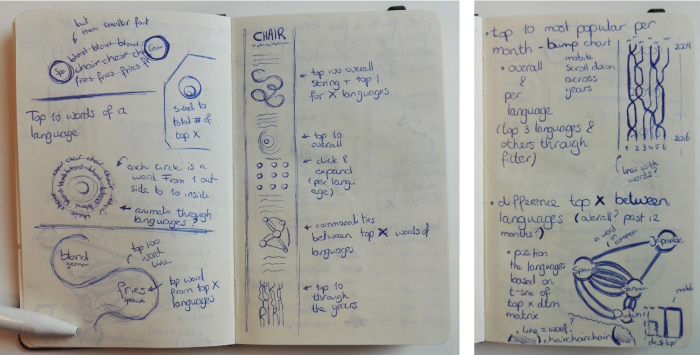Above you can see the design that I send Simon and Alberto. I took a sort-of "start at the top and provide more details with each visual" approach. All the way at the top would be the most often translated word across all languages. Next, a visual with the top 1 per language which was interlinked by a swirling word string consisting of the top 100 translated words overall. Taking another step deeper would be the top 10 per language in a tree ring like structure, comparing all the original words to the English translation. To see similarities between languages I drew a network where each link would be a string of words representing the word that both languages had in common between their top 10. Finally, there would be a bump chart comparing the top 10 across time. This last chart eventually wasn't possible because I only had that 1 dataset without a time component.
For the first time, I created a "mood-board" on Pinterest just for a project. Collecting things that inspired me resulted in many black-white silhouette like children's book images, art like pieces which consisted mostly out of words and letters and cut-out handlettering.
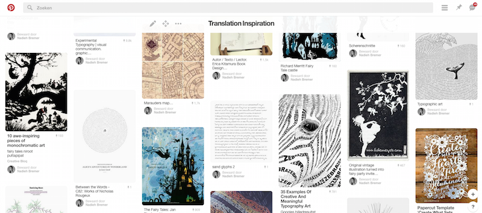During the project itself I also sketched a lot. Mostly because I was figuring out the math. All of the visuals have some form of texts placed on curvy paths. And for all of these paths I had to figure out the custom SVG path formula. As an added difficulty, the paths had to be constructed so the words on the path wouldn't overlap (too much) and the text should be upright as much as possible.
For the top visual; the word string linking the top 1 of each language, I wanted something that swirled around, a bit like my sketch below.
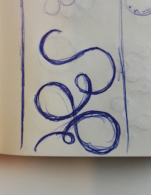But I also had to make the page responsive, and I just couldn't find a programmable / mathematical way to create a swirl that would work for many different screensizes (and only later did I think of the fact that my original idea had crossing lines, which would result in unreadable text). Therefore, I started to work more with the idea of "beads on a string". Going down in an angle and having the word string follow the beads in half circles. It still took me a lot of sketches to figure out which layouts would work. And how things should look and function when either 2, 3 or 4 circles fitted in a row on the screen.
I had some other ideas in my head to make the circles more tightly packed, but only after even more sketches did I figure out that it wasn't possible mathematically (which you don't notice that well when sketching, since lines and circles aren't perfect)
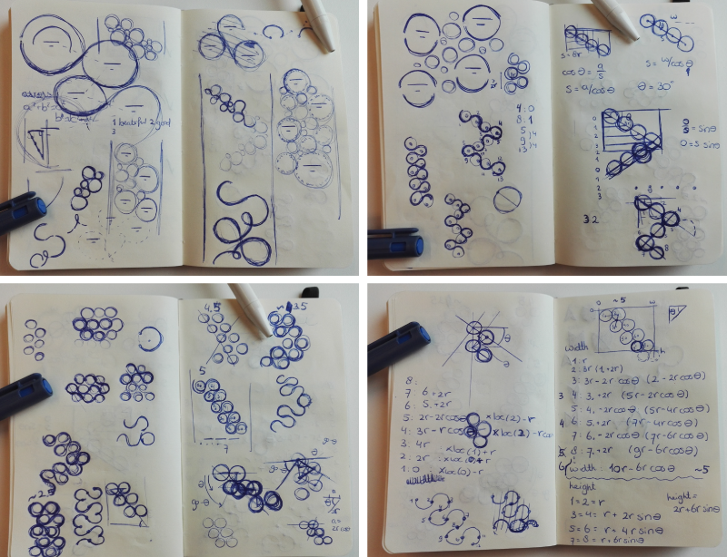For the second visualization of the "tree-ring" top 10 per language I didn't have to sketch that much, it was pretty straightforward. The third visual of the network on the other hand... Although the lines inside the network weren't too difficult, the problems arose when you click on an outer circle which makes it move towards the center. I'll spare you the details, but it had to do with the text always reappearing in upside manner (not upside down) while the lines seemed to move with the language circle as well. Figuring out how that was supposed to work took even more pages in my little sketch book.
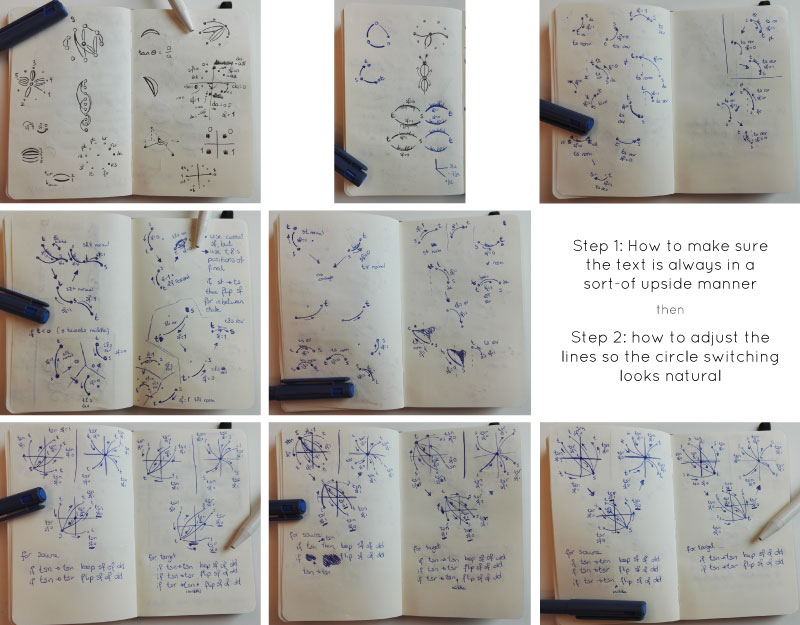The final thing I looked into was the overall design of the page. I wanted to recreate that old children's book, black cut-out style, imagery. But I couldn't really find a way to incorporate that with the theme of translations (or a responsive page). So I eventually turned to handlettering and decided to create my own title and subtitles. Drawing them on my iPad Pro (with the Tayasui Sketches app, love that app). I started out trying to make the letters look smooth and flowing nicely. However, for an inexperienced hand like mine, that was very hard to do. Furthermore, I wasn't quite happy with the resulting style. So instead, I made them look a bit quirky and imperfect. Distinct from anything else I'd managed to find on Pinterest.
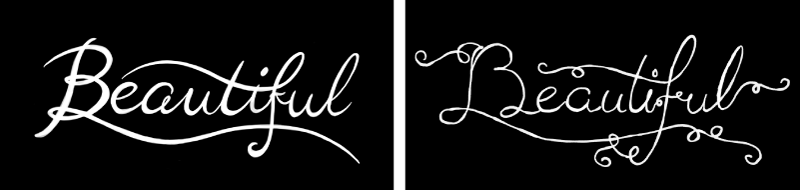In terms of coding I started with the tree ring like visual that displayed the top 10 of a language. I'd worked with arcs often enough in the past (and especially the previous datasketches months) to set up the basic forms in an hour or so.
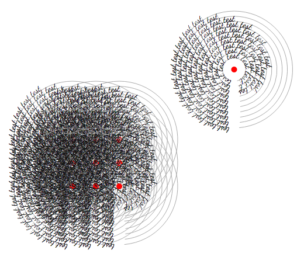I then focused on how to animate the switching between the languages. Due to the space, especially on a mobile phone, I made one big circle in which you could read the top 10. The other languages would be smushed into tiny, almost flower-like, circles. In my first design, the tiny circle would move into the place of the big circle and simultaneously open up to reveal its top 10. However, when I had that working, the animation was extremely staggered. So much so that it was actually a bit hard to see that these two circles switched position (see the gif below).
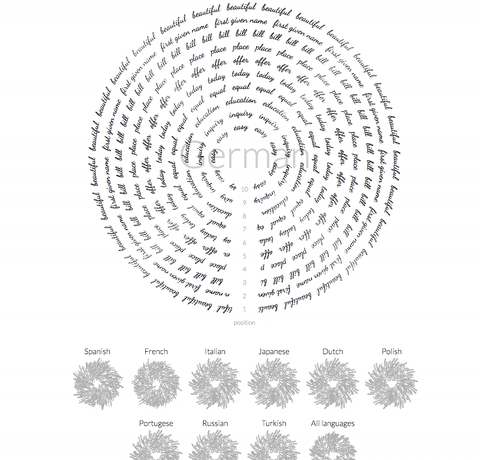So I set about trying a different approach. For the 2nd idea, the text in the circle would rotate out of view before rotating back in again in the new chosen language. When I finally overcame all the browser bugs to achieve this I was actually quite happy. I liked the result more than my previous idea of switching. However, it was still a bit jerky. I therefore looked into doing it in canvas, but there's no way to place text on a path in canvas (there is a hack that I used in my Occupations piece, but in the way I was using the text in this project that was going to be way to complicated). I even asked Dominikus Baur for help when we were both at the INCH conference. But the issue was not in the script but in the drawing on screen, so in the end I just had to accept that this was as good as it was going to get.
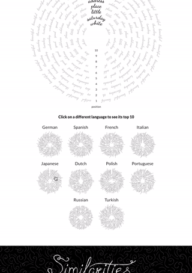As you can see from comparing the two gifs above, I also changed the design of the big ring. Alberto Cairo suggested only making 1 word stand out, otherwise there was too much going on for you eyes to focus on. Sadly, you can't use different styles in 1 textPath element. So there are now 3 different textPaths there; one light grey on the left and right displaying the original word and a bigger black word (the English translation) in the middle. Figuring out how to place those 3 elements so it would look like it was 1 string of words (and never overlap) was another interesting puzzle to solve, hehe
Next up was the word string, or "word snake" as I started calling it actually. Because I couldn't really mathematically figure out the natural looking swirl, I first tried a different route; to create circles. The top 100 words overall would then be shown as the "strokes" of the circles. However, to prevent any clipped words, I couldn't use the entire circumference of each circle. And because the strings were now separated, I had to number each of the words, otherwise there was no way to know for sure where in the top 100 one of half-circle sections belonged.
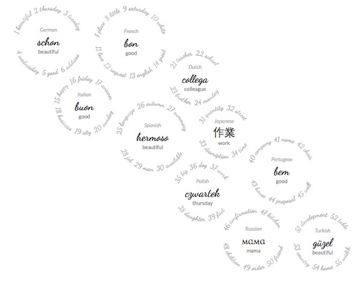In short, I wasn't quite happy with the result. Therefore I revisited the swirl idea, but this time I tried an approach where I would see the circles as "beads on a string". In that set-up it was mathematically possible to make 1 string of words going around the circles representing the most often translated noun/adjective of each language. Of course, actually coding up the correct SVG path formula took some trial and error...
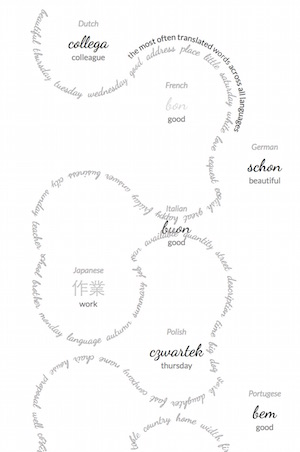Due to screen size, I created several options for the "beads" to be positioned. It calculates if 2,3 or 4 circles fit in a row and the rest updates automatically. Personally, I like the 2-beads per row version the most (the left most version in the image below), but that just left too much white space on the sides for wider screens.
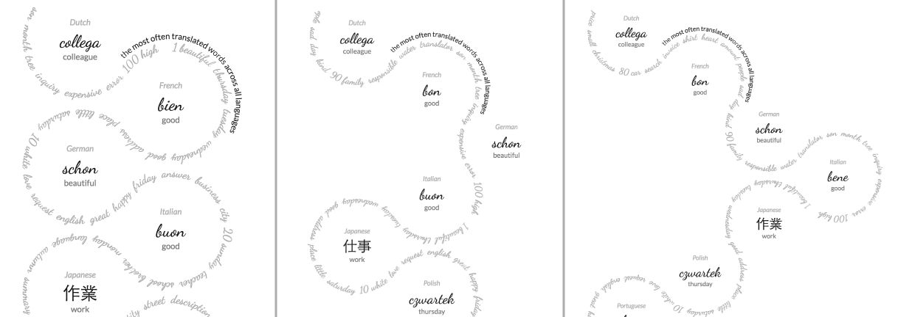In a call with Alberto and Simon they both told me that due to the word string now snaking around each of these languages, the language "circles" looked like they could be clicked, like they were buttons. So I thought about what interesting info I could add that would be displayed to reward the people that actually tried to click the languages.
Which brought me to Google Trends, where I looked up the trend of these most translated words and their related queries. And thankfully, all of the words had some interesting peaks and dips going on. So I made the most extensive tooltip I've ever made. On the top it shows the worldwide trend of the English word over the last 5 years. With some digging into the periods displaying the peaks and dips I found explanations for each (and annotated them using Susie Lu's awesome annotation library). Below the line chart is a word cloud about the most interesting related queries. Mama was definitely my favorite, with related queries such as maternal insult and yo mama.
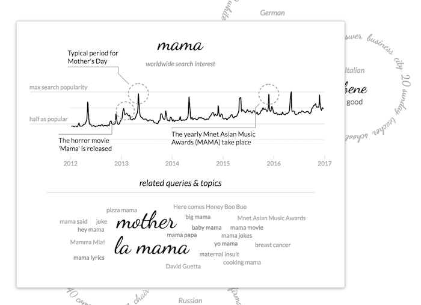The final visual revolved around the similarities between the 10 languages' top 10 words. Each language was a circle and each top 10 word that two languages have in common becomes a line. The highest similarity, 4 words in common, happens between Spanish, Portuguese and Italian, but also for Russian and Polish. So there does seem to be something cultural there defining the most searched words :)
I first had to set-up a system in which two "nodes" in a network could be connected by multiple "links". Typically people just use a thicker line to represent something where two nodes are more highly linked. But because I wanted to eventually change the line by their actual words, I had to find something else. Using ever more curved lines seemed like an elegant solution.
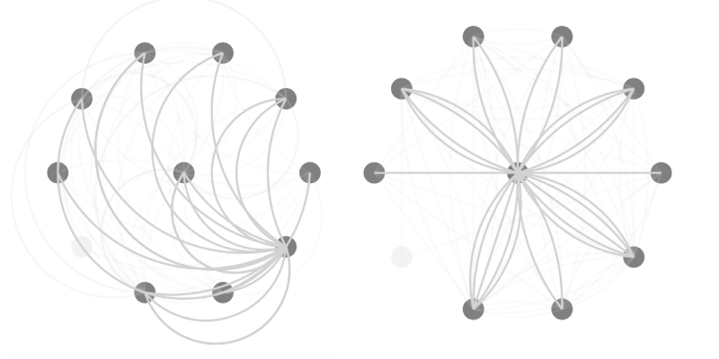And then I replaced the lines by the words themselves, in a similar design as the tree ring, and saw; chaos...
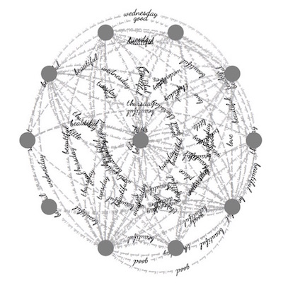I totally forgot to think about the fact that many lines would overlap, making it impossible to read the words. But also that the words themselves would make the visual extremely full and cluttered. Therefore, I put the lines back in and only kept the words for those links attached to the central language circle. That already felt better, but Alberto advised to only keep the central dark (English) word to really get the focus, which is what you see in the final result.
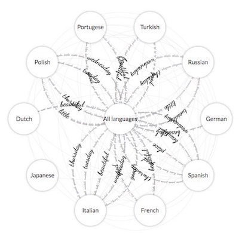As for the word string visual, this one also has a difference between desktop and mobile. To maximize the space available on a mobile screen, the network is no longer a circle, but a rectangle, giving more space to the lines and the words on the lines.
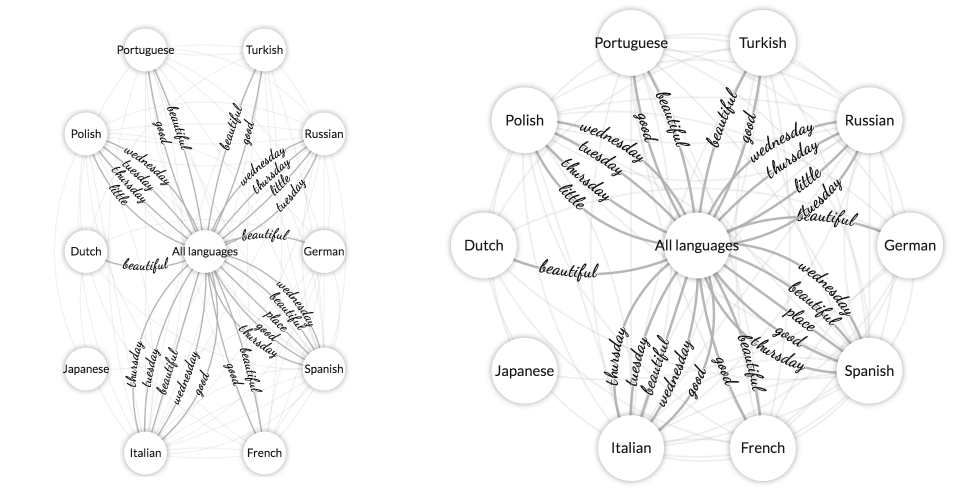I already talked about my biggest "struggle" with this visual in the sketch section; making sure the transition between the languages looked natural while always having the words appear (mostly) upright. This was actually more of an understanding problem than a coding issue, but there is 1 small "hack"; right after clicking an outside circle the words disappear and then I immediately replace the lines by their new "versions" (but in the "old" state) after which the transition starts, making it all look smooth :) (and nobody noticing there was ever something complex going on)

And all those separate elements combined turned into the following final result. Starting out at the highest level of the most translated word overall and diving ever more deeply into the differences and similarities between languages. Have fun playing around with it and seeing some of the expected or rather odd words that people want translated through Google Translate!
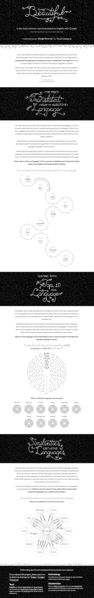It was really awesome to work together with Google and Alberto Cairo (next to Shirley of course) and create an extensive visualization based on data that we could request from such a vast source such as Google; data that is impossible to find online!
{kind=link}
{kind=link}
{kind=link}
{kind=link}
{kind=link}
{kind=link}
{kind=link}
{kind=link}
{kind=link}
{kind=link}
{kind=link}
{kind=link}
{kind=link}
{kind=link}
{kind=link}
{kind=link}
{kind=link}
{kind=link}
{kind=link}
{kind=link}